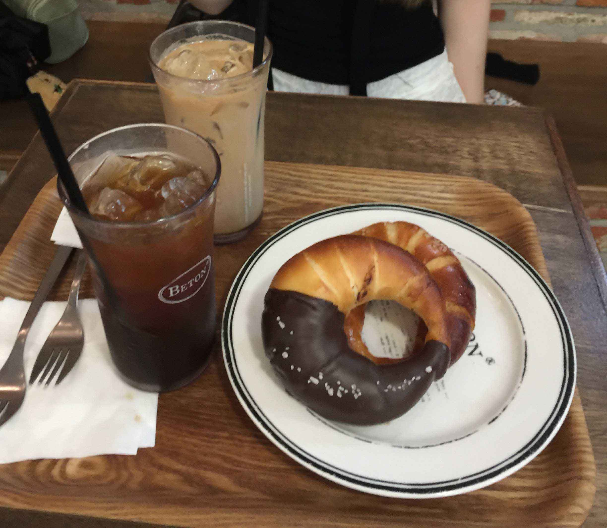
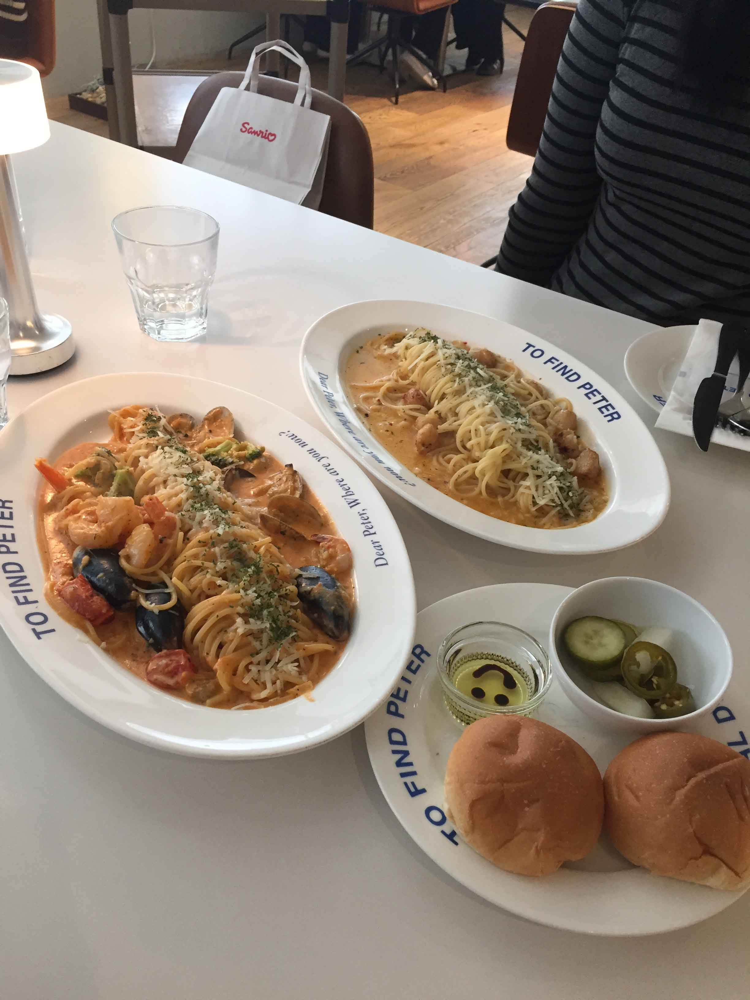
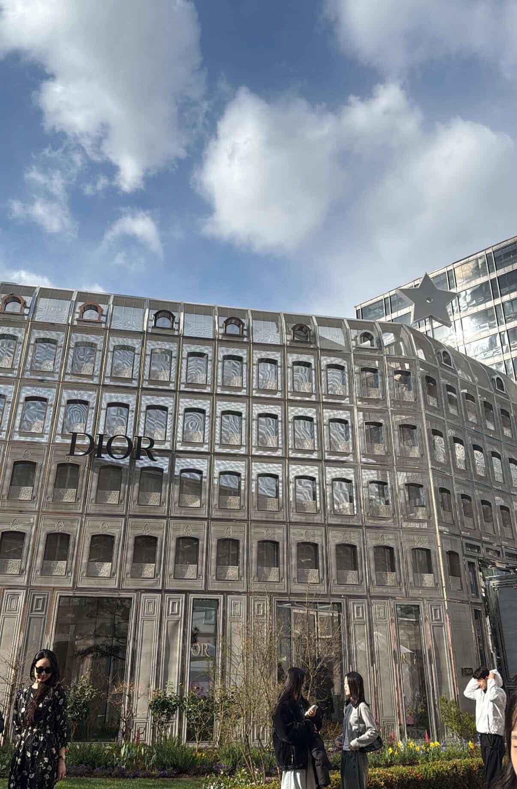
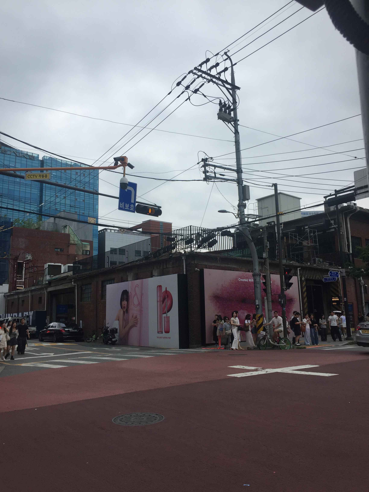

カフェ・グルメ・ショッピング・POPUP巡り
韓国で有名な塩パン屋さん。 人気店で待ち時間あり⚠️
📍住所： 서울 성동구 성수동2가 315-478 🗺 地図を見る

おしゃれなパスタ屋さん。 韓国のパスタは見た目も可愛く量も多い。
📍住所： 서울 성동구 성수동2가 300-5 🗺 地図を見る

ソンスのフォトスポットと言えばここ。 目の前にdasiqueがありコスメショッピングもできる。
📍住所： 서울 성동구 성수동2가 302-11 🗺 地図を見る

洋服やコスメの期間限定POPUPが多い。 渡韓前に確認推奨。
